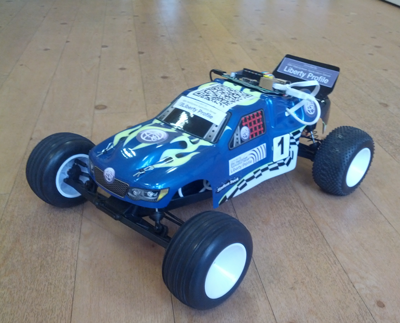

Last year we demonstrated the first application server running on a Raspberry Pi with the Liberty profile. Later in the year we demonstrated running the Liberty profile on a mobile phone. Now we’ve gone even further and have a Liberty profile server running on and controlling a radio controlled car! Introducing the truly mobile application server!
What is the Liberty Car?
The Liberty Car is a remote controlled car that has a Raspberry Pi with a web application running on a Liberty server controlling it – all processing and logic is local to the car. It has its own WiFi network which is run from a USB powered router under the chassis Рanyone in range with a WiFi capable device and a JavaScript capable web browser can control it. Everything is powered from a single battery in the car so it is a completely self contained setup – the only thing you need in addition to what is included in the car is a device to control it.
{kind=link}
How do you control the car?
The web application running on the Liberty profile presents a simple Dojo web page that lets you control the car (see left).
The main part of the UI is a Dojo 2D grid – the x axis controls the car’s steering and the y axis controls the car’s speed – both are variable with very granular controls (200 different angles for steering are registered which is more than enough). Every 100ms the UI sends a POST request to the web application on the car with the current steering and speed values which the car then sets itself to. If the UI doesn’t send the car a new set of speed/steering values 300ms after the last transmission then the car applies the breaks and stops moving – this prevents the car racing away if you lose control.
Each device connected to the car is given a unique user ID based on the users’ IP address – through an admin panel for the car you can grant/remove control rights from any users on the fly to allow as many or as few people control rights at the same time as you like – if you tell the admin panel to let all users control the car then everyone can control it at once leading to a “race by committee” mode where the users all fight for control of the car which will try and average their commands to decide where to go.
{kind=link}
The car contains:
- Raspberry Pi (the ‘brain’ of the car that runs the Liberty server and web application that controls the car)
- Servo (for steering)
- Motor (for driving the car)
- ESC with UBEC (for controlling the motor and providing power to the servo)
- PWM board (to let the PI control the servo and ESC directly – each needs 1 PWM signal and the GPIO on the PI only has 1 hardware PWM out) – we used one from Adafruit
- GPIO ribbon cable and breakout board (not functionally needed but having a ribbon cable makes it much easier to attach/detach the Pi from the car without worrying about wiring it all up correctly)
- Step down power regulator (to take the 7.2V from the battery and turn it into 5V for the Raspberry Pi)
- USB powered wifi router (in access point mode to allow lots of connections to the Pi’s wifi without worrying about trying to set the Pi up as a wifi access point)
- 7.2V battery pack (standard remote control car NiMh battery)
- Y splitter cable for battery pack (to split power between the Pi and the motors)
How does the web application drive the motors on the car?
The web application sends I2C messages out to the PWM board from the Raspberry Pi’s GPIO pins– the web application makes these calls and so directly controls the PWM signals which control the servo for steering and the ESC controlling the motor for speed.
How responsive is the car?
The car is very responsive – I can’t perceive any lag in the car when controlling it which makes sense as signals are sent every 100ms and processed extremely quickly – the biggest latency is the time it takes for the motors to react (approximately 400ms to move from full lock left to full lock right when steering).
What makes this different to the other Raspberry Pi controlled cars?
Many Raspberry Pi controlled cars have the Pi replacing or controlling the radio transmitter with the car still having a radio receiver – this means the car is still radio controlled and so you have limitations on how many cars you can control in an area due to the number of different frequencies available – this setup replaces the radio receiver so your limitations are the number of wifi devices in the area. The other main difference is that the car is controlled from a web page presented from an application server running on the car – you don’t need a specific mobile app or other application to control the car beforehand (although you can write your own if you want) so anyone can connect and control the car from a web browser making it a lot more flexible. Due to the fact it runs on an application server it also means that it can be controlled over the internet – we have been able to drive the car which was located in the UK from a mobile phone in Germany.

[…] The right question is not what can we do with it but rather who can benefit from it.¬†I can hardly imagine a dozen of Agile developers with a Raspberry Pi in the middle of the room on which all the branches are kept. The Java Enterprise is scalable but with a resourse limit and without a clustering,¬†only a partial capabilities can be used. For the hobbysts and juniors on the other hand, there are unlimited number of projects where a very portable, lightweight application server on a small board would be used¬†including¬†learning, testing, IoT and even¬†driving a car¬†? […]
Is the source code for the project available?
Not yet, I’ll give him a kick… üôÇ
Cool thanks! I forgot to mention the lizard enclosure project I worked on uses Liberty Profile on a Raspberry Pi.
https://github.com/onebeartoe/lizard-enclosure
Video links are in the readme.
That’s really awesome!
I see you have created your own serial port listener code to read input from your Arduino sketch – it’s a little late now to help but you should check out our new Arduino user feature (blog here: https://developer.ibm.com/wasdev/2014/06/11/arduino-feature-liberty-profile/ sample here: https://developer.ibm.com/wasdev/docs/getting-java-apps-talking-arduino/ ). This does a lot of the work you are already doing in regards to communicating with your Arduino (hence why it may be a little late as you’ve already done the hard work of implementing the Liberty>Arduino connection yourself) but it gives you some nice API options (remote method invocation of methods on your Arduino sketch, direct pin read/writes, callbacks based on pin inputs all from your web app) which may make it easier if you choose to add more Arduino sensors/functionality in the future.
Thanks Tom. Yeah I wish I had known about the Arduino feature earlier.
I actually just saw the Hackathon (https://developer.ibm.com/wasdev/2014/06/19/internet-things-hackathon-devoxx-uk) and told my self “I wish I had known about the Arduino feature.” But at least now I know about it and can use it in future projects.
I was working on my own WiFi car when I came across this post. That is why I am curious to see the code. So no problem, but I would still like to see it when you post the code.
Well the Arduino feature was only released a couple of weeks ago, so it may not have been around in time for your current project. I’ll make a note to reply here as soon as the code goes live – I have made it configurable so in theory you can make it work with the same hardware (raspberry pi with the adafruit pwm controller) with no code changes needed (cars can be configured via a webpage from the app). If you use a different PWM controller then you can replace the “driver” code in my app with something to work with your controller and as long as you maintain the API then the rest of the code will work with it.
Thanks for the information, Tom. As a side note, I haven’t been getting email notifications on post replies (even though I have the two check boxes below selected).
I saw your cool lizard project on a video podcast when someone retweeted it on Twitter. I think we tweeted a link to it from the account. It’d be great to talk to you about it a bit – maybe interview you for WASdev.net. If you’re interested/willing, drop us an email to wasdev@uk.ibm.com and I’ll get in touch. üôÇ
Consider me kicked!
Can’t give a date as it is still out of my hands but I was asked to change a dependency in the code to allow us to open source with a nicer license which has now been completed.
How your power supply circuit looks like? Single 7.2V battery pack supply RPi via converter and servo/dc motor via UBEC? Could you describe this part more elaborate or share circuit scheme?
We have a voltage regulator that downsteps the 7.2v of the car battery to ~5.1v for the raspberry Pi. We have a microUSB cable that is hardwired onto the voltage regulator and takes the 5.1v straight off the +/- terminals and send that into the Pi.